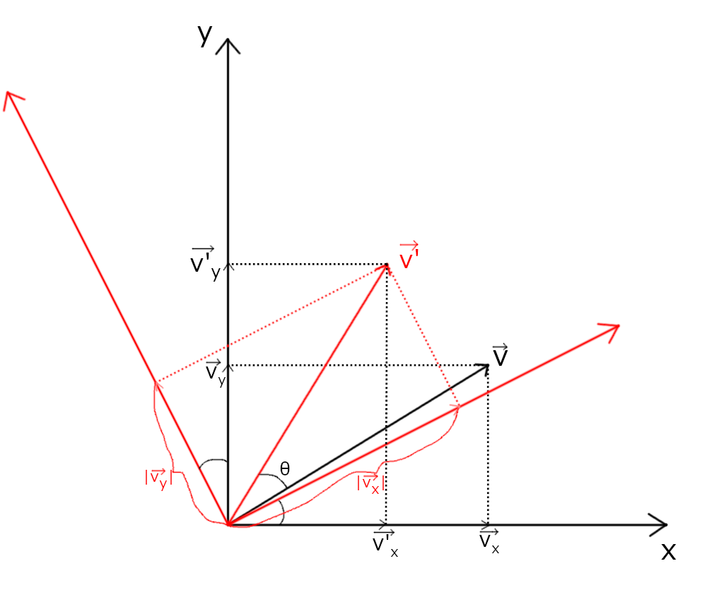
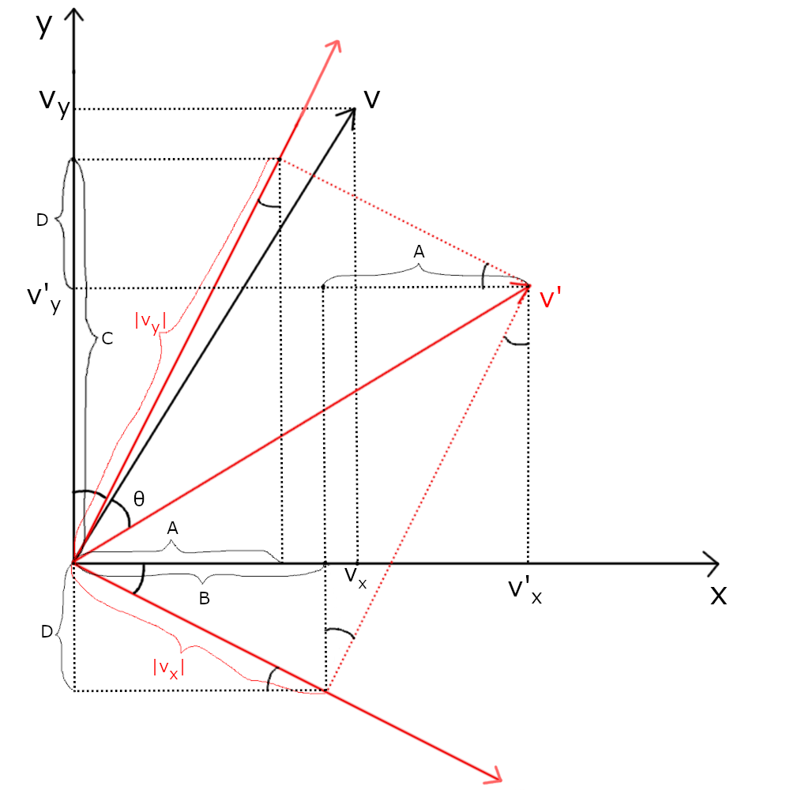

Model matrix
Model matrix là một trong 3 thành phần tạo nên Model View Projection matrix, model matrix tập hợp tất cả các biến đổi liên quan tới mọi vật thể trong không gian 3D, những biến đổi này là dịch chuyển, xoay và phóng to/nhỏ. Nếu bạn nhớ, thì hồi lớp 11 bạn có học về Phép biến hình, trong đó có phép tịnh tiến, phép xoay và phép vị tự, đó chính là 3 phép biến đổi mà mình vừa nói 😳.Đầu tiên là phép dịch chuyển, được gọi là Translation matrix, sau khi nhân một vector (điểm) \(v\) với nó thì \(v\) sẽ được di chuyển theo một hướng nào đó, gọi vector đại diện hướng đó là \(t\), ta cần tìm ma trận có thể làm được điều sau: $$ A* \begin{pmatrix} x \\ y \\ z \\ 1 \end{pmatrix} = \begin{pmatrix} x + t_{x}\\ y + t_{y}\\ z + t_{z}\\ 1 \end{pmatrix} $$ Ta để ý là cả 3 chiều của \(t\) đều có dạng biến nhân gì đó cộng gì đó, như vậy ở mỗi hàng của ma trận ta chỉ cần để số 1 ở chỗ biến cần giữ, và để chiều tương tự của \(t\) ở cột thứ 4 (\(w\)) là sẽ ra lại được \(t\). Như vậy ma trận của chúng ta sẽ có dạng: $$ \begin{pmatrix} 1 & 0 & 0 & t_{x}\\ 0 & 1 & 0 & t_{y}\\ 0 & 0 & 1 & t_{z}\\ 0 & 0 & 0 & 1 \end{pmatrix} $$ Tiếp theo ta sẽ nói về phép phóng to/nhỏ, gọi vector đại diện cho giá trị ta muốn scale ở 3 chiều là \(s\), ta cần một ma trận có thể làm được điều sau: $$ A * \begin{pmatrix} x \\ y \\ z \\ 1 \end{pmatrix} = \begin{pmatrix} x * s_{x}\\ y * s_{y}\\ z * s_{z}\\ 1 \end{pmatrix} $$ Như vậy thì càng dễ, mỗi hàng của ma trận ta chỉ cần để chiều tương ứng của \(s\) vào chiều của \(v\) là ra: $$ \begin{pmatrix} s_{x} & 0 & 0 & 0\\ 0 & s_{y} & 0 & 0\\ 0 & 0 & s_{z} & 0\\ 0 & 0 & 0 & 1 \end{pmatrix} $$ Cuối cùng đến với phép xoay, là Rotation Matrix, cái này sẽ hơi khó tí. Cho nên ta hãy nói về nó ở 2D trước, ta muốn xoay một vector \(v\) một góc (\(θ\)) xung quanh gốc tọa độ (0; 0) thành vector \(v'\). Để cho đúng Đại số tuyến tính (và cũng để dễ tính), ta sẽ vẽ luôn trục x, y sau khi xoay xong, cái này người ta gọi là chuyển hệ quy chiếu, hay chuyển cơ sở sao đó mình cũng quên rồi. Mình tô màu hệ quy chiếu của \(v\) là màu đen và hệ quy chiếu của \(v'\) là đỏ để cho bạn dễ nhìn.

Mục tiêu của ta là tìm được tọa độ của \(v'\) trên hệ quy chiếu đen dựa vào tọa độ của \(v\) và (\(θ\)). Bạn có thể tự làm thử, đối với mình
thì mình vẽ các đường và các ký hiệu sau:

Lấy \(\vec{v_{y}}\) trên hệ quy chiếu đỏ chiếu lên trục \(x\) của hệ quy chiếu đen, gọi độ dài hình chiếu đó là \(A\), lấy \(\vec{v_{x}}\) trên hệ quy chiếu
đỏ chiếu lên trục \(x\) của hệ quy chiếu đen, gọi độ dài hình chiếu đó là \(B\). Ta thấy \(|\vec{v'_{x}}| = A + B\), và \(A = |v_y|\sin{θ}, B=|v_x|\cos{θ}\), suy ra
\(|\vec{v'_{x}}| = |v_y|\sin{θ} + |v_x|\cos{θ}\).Lấy \(\vec{v_{y}}\) trên hệ quy chiếu đỏ chiếu lên trục \(y\) của hệ quy chiếu đen, gọi độ dài hình chiếu đó là \(C\), lấy \(\vec{v_{x}}\) trên hệ quy chiếu đỏ chiếu lên trục \(y\) của hệ quy chiếu đen, gọi độ dài hình chiếu đó là \(D\). Ta thấy \(|\vec{v'_{y}}| = C - D\), và \(C = |v_y|\cos{θ}, D=|v_x|\sin{θ}\), suy ra \(|\vec{v'_{x}}| = |v_y|\cos{θ} - |v_x|\sin{θ}\).
Mình khuyến khích bạn nên làm thử lại từ hình ban đầu để thật sự hiểu và nhớ, hình sau vẽ hết các đường nét đứt và đánh dấu các góc bằng nhau nên bạn nhìn ra rất dễ.